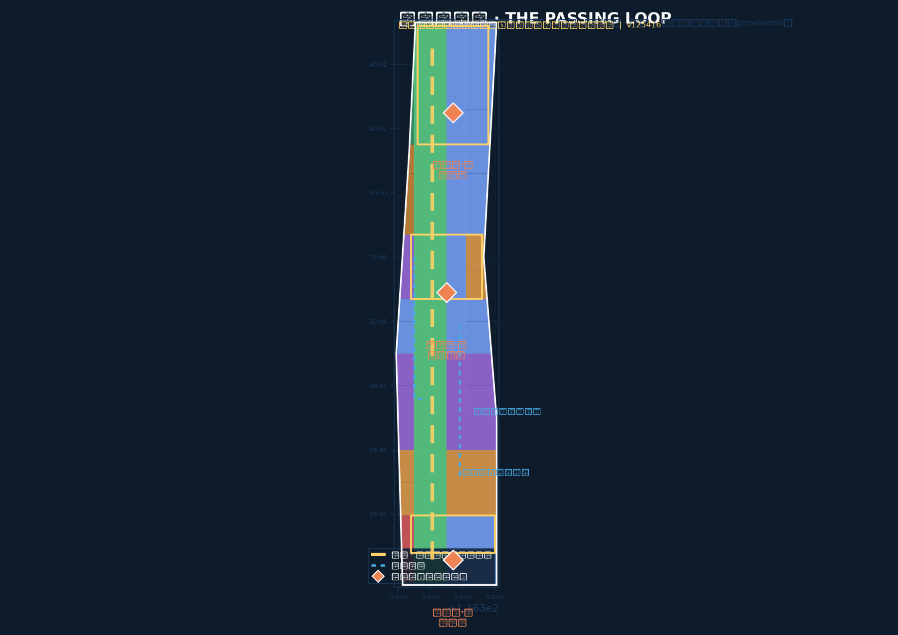
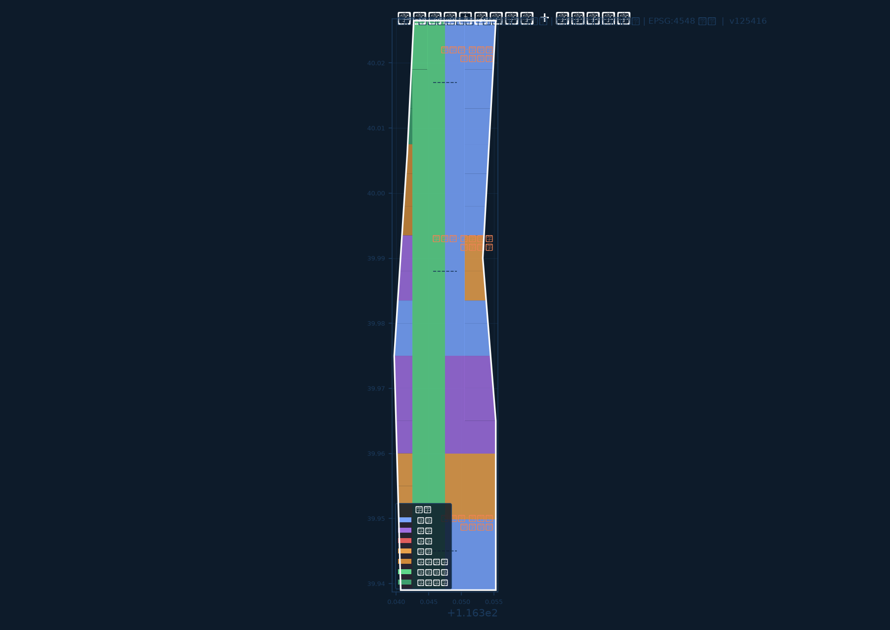
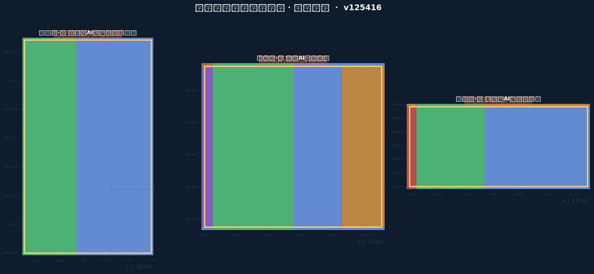
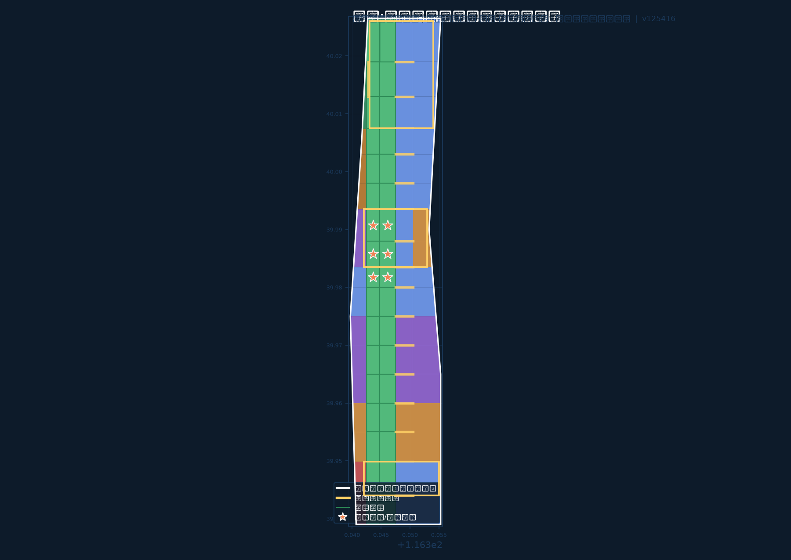
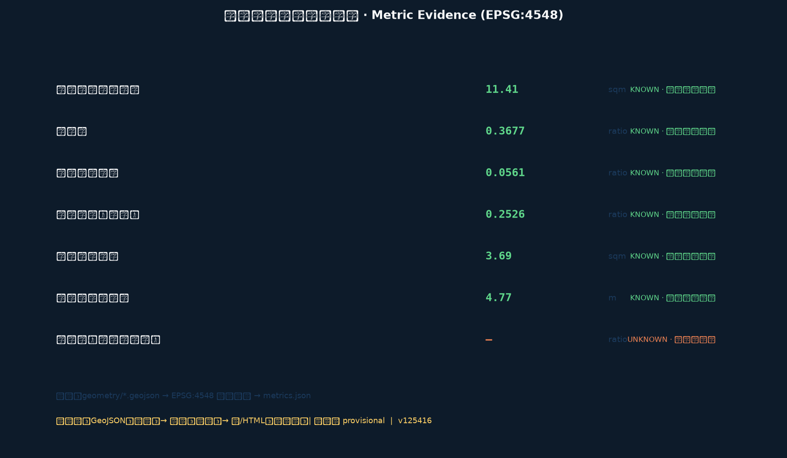

THE PASSING LOOP: Translating Single-Track Passing-Loop Discipline into an AI Innovation Belt Urban Design
Taking the passing-loop institution of single-track railway operation as its prototype, this proposal translates the century-old engineering wisdom that 'opposing trains on a single track must pass each other in an orderly way' into governance and spatial order for the AI Innovation Belt: one main line (heritage park spine), three passing stations (Zhongzhiyuan / AI Origin Community / Dazhongsi), and two wings (Zhongguancun technology-service wing / Xiaoyuehe scenario-empowerment wing). Passing-order discipline organises fast vs slow innovation, human-machine relations, data elements and time-shared public space. All spatial suggestions are conceptual, generated on provisional boundaries, to be recomputed as a whole when official redlines arrive.
THE PASSING LOOP · 京张会让带
Translating single-track passing-loop discipline into an AI Innovation Belt urban design
A century ago, on a single-track railway, two opposing trains could not occupy the same section at the same time. They passed each other in an orderly way at a passing loop — one train stopped and waited, the other went through first, then they swapped. This was the real operating institution of the Jing-Zhang Railway, the first trunk line designed and built independently by China. A century later, fast and slow innovation, small and large teams, humans and intelligent agents share the same urban track. This proposal argues: yielding is not inefficiency — it is an order that can be designed, made visible, and operated.
Package version & revision: iteration v1.1. v1.1 changes: building footprints re-laid out as a non-overlapping grid (union area equals summed area), building_density recomputed as 0.253; manifest declares model deepseek-v4-flash. All metrics are reproducible from geometry in EPSG:4548.
Design Basis and Source Inventory
This formal package takes the official pre-qualification announcement of the Centennial Jing-Zhang AI Innovation Belt International Urban Design Open Call, issued by the Haidian Branch of the Beijing Municipal Commission of Planning and Natural Resources, as its primary authority, and the machine-readable site package registered in brief/site-package/ as its task, enum, coordinate-policy and indicator-range authority 来源 来源. The agent-facing open-call taskbook adds the three positionings, five functions, three areas and two wings, six required tasks and ten co-creation principles; it is the controlling authority for coverage of agent.1–agent.6 来源 标准.
Source use was screened against the central public source registry 来源: formal conclusions rely only on formal-ready sources; provisional-only sources (all boundaries in this package) are used for generation, visualisation and intake self-check only; background sources are used for narrative and operation suggestions only and never support spatial-control conclusions. data/processed/agent_fact_pack.md serves as an organisation layer, not a new authority 来源.
The most important disclosure concerns geometry. The official redline and official key-area polygons are not yet published; all submitted geometry/site_boundary.geojson and geometry/key_areas.geojson features use the repository's provisional rough boundaries 来源 来源, marked official_boundary=false, geometry_role="provisional_constraint", boundary_precision="provisional_rough" 空间数据 空间数据. They are usable for concept generation, visualisation, self-check and design discussion, and must not be treated as an official redline, an approval basis, a precise-area basis or a statutory-control conclusion. When official polygons are published, the boundary, key areas, land use, buildings, roads, green space, public space, phasing and every metric must be recomputed as a whole, not patched file by file 指标 深度.
Because the boundary is rough, the proposal deliberately puts its weight on relational decisions — sequence along the line, location of passing nodes, time-sharing logic of public space, what opens and when — and deliberately refuses to fabricate absolute conclusions (FAR, building height, density, road redline widths), which are recorded as unknown with reasons 标准 指标.
Professional standards are read from the repository's local reference snapshots rather than from bare URLs; all nine mandatory standards are answered item by item in standard_matrix.json 标准 标准 标准. Full source, assumption, metric and compliance coverage lives in sources.json, assumptions.json, metrics.json, compliance_matrix.json and design_depth_matrix.json; the prose does not repeat machine indexes.

Core Concept: The Passing Loop and Passing Order
Naming. The proposal is named THE PASSING LOOP · 京张会让带. A passing loop is the single-track railway facility — a siding parallel to the main track where opposing or fast/slow trains can pass each other. The name carries three layers, all pointing at the same thing:
- Railway layer: The Jing-Zhang Railway was a single-track trunk line; passing stations were the basic institution of its safe and efficient operation. The Qinglongqiao zigzag itself is the famous engineering solution that used passing and reversal to conquer the Badaling grade 来源.
- Governance layer: The AI Innovation Belt is a shared "single track" — basic research (slow train), industrial conversion (fast train) and public experience (passenger service) run in the same space; passing order decides who goes first, who waits, and how they swap.
- Ethics layer: human-machine yielding, the weak yielding to none, the public yielding to nothing — the right-of-way is the first public rule of an AI city 标准 标准.
Logo and visual identity direction. The mark is a double-track passing figure: two parallel rails that cross at a node, one solid and one dashed, the dashed rail yielding the solid one at the meeting point; three diamonds at the node represent the three passing stations. The construction rule has a hard constraint: the positions of the three diamonds must match the true relative sequence of the three key areas (south-middle-north); changing the number or order of the diamonds changes the scheme itself. The naming system extends the railway lexicon: the main spine is the "main line", the two wings are "branch lines", the three key areas are "passing stations", public-space nodes are "stops", AI scenarios are "train services". Wayfinding is physical, high-contrast and multimodal, never app-dependent 来源 深度.
Spatial structure: one line, three passing stations, two wings. Passing order needs a carrier: one main line connects three passing stations; two wing branch lines plug into the wider innovation network.
- Main line: the Jing-Zhang Heritage Park vitality spine — a 9-km-class north-south slow-mobility and public-space axis where passing happens 空间数据.
- Passing station · South (Dazhongsi AI Industry Cluster): urban-style passing — industrial, commercial and rail passenger flows yield to each other; station integration and four-quadrant pedestrian connectivity are the core moves 空间数据.
- Passing station · Middle (Beijing AI Origin Community): origin-style passing — university research (slow) and outcome conversion (fast) swap here; campus-district slow-mobility stitching and open-source collaboration are the core moves 空间数据.
- Passing station · North (Zhongzhiyuan AI Autonomous Innovation Acceleration Area): acceleration-style passing — R&D, testing and standards governance meet; open test grounds and safety sandboxes are the core moves 空间数据.
- Two wings: the Zhongguancun technology-service wing (capital, IP, global allocation) and the Xiaoyuehe scenario-empowerment wing (real demand, real users) — branch lines feeding the main line 来源.
The four-layer passing mechanism (threaded through the whole proposal; the backbone of AI scenarios and operations):
1. Fast-slow passing: separate fast through-routes from slow experience belts in space; use a "running diagram" to time-share industrial and public activity 空间数据. 2. Human-machine passing: pedestrian priority is the default rule; low-speed robots, autonomous shuttles and delivery must pass a "yielding test" before entering public space 标准 深度. 3. Data passing: data-element circulation follows an "authorise-use-return-review" loop; public data yields to personal privacy, commercial data yields to public interest 标准. 4. Scenario passing: public space is time-shared on a bookable "service timetable" — industry on weekdays, public on weekends, culture at night 深度.
Relation to the existing planning narrative. The concept maps the three positionings (centennial cultural belt, urban AI life-experience belt, AI convergence-innovation belt) onto three running modes of the main line: cultural belt = historical ballast of the line; life-experience belt = public interface of the stops; convergence belt = the place where passing happens 来源. Every spatial suggestion is a conceptual suggestion, a reference scheme, or material for professional teams to deepen — not statutory planning, government approval, investment commitment or parcel-level demolition conclusions 来源.
Three-Level Scope Framework
The proposal answers the announcement's three nested scopes at different resolutions instead of repeating one drawing three times 深度:
| Scope | Design question | Answer in this proposal | Data anchor |
|---|---|---|---|
| Coordinated research 43.6 km² | How to organise the AI industry ecosystem and future city form | A network question: where the passing belt draws from and sends to — university origination, open-source collaboration, enterprise conversion, public experience, international communication as a loop | Industry chapter, sources.json, compliance_matrix.json |
| Overall design 11.4 km² | How to map renewal framework, industry space, transport and character | A line question: main-line sequence, passing nodes, public interfaces and land-use partition 指标 | 空间数据, 空间数据 |
| Key areas 368.4 ha | How to reach detailed-design depth in three areas | A station question: what each passing station opens, its renewal handle, its operating protocol 指标 | 空间数据 |
The transmission between levels is explicit and checkable: the main line divides into three passing-station sections (south-middle-north); every land-use cell carries its section role, so any reviewer can trace a parcel back to its structural role 空间数据 深度. Structure is not asserted in prose and then contradicted by geometry — the geometry is the structure.
Coordinated Research Area: Industry and Future City Research — where the passing belt draws from and sends to
Three positionings and five functions mapped onto one line. The centennial Jing-Zhang cultural belt is the main line itself; the urban AI life-experience belt happens at the stop interfaces of the three passing stations; the AI convergence-innovation belt is the meeting zone where the two wing branch lines join. The five functions are anchored where geography already supports them 来源:
- AI full-stack autonomous innovation system: anchored at Zhongzhiyuan (north passing station) — test grounds for autonomous models, compute, standards and safety governance.
- World-class AI innovation ecosystem: anchored at the Origin Community (middle passing station) — near-campus origination, open-source collaboration, outcome publishing.
- AI+ scenario-empowerment paradigm: along the whole main line, concentrated at Dazhongsi (south passing station) and the wing junctions.
- Intelligent vibrant AI city: the public interface and stops of the main line — perceptible, bookable, reviewable AI public life.
- Global voice in AI governance: public demonstration and rule output of passing order — the passing timetable, passing tests, passing compact 标准.
Three areas, two wings, one loop. Synergy is designed as a closed loop, not an adjacency diagram: origination (Origin Community) → testing and governance (Zhongzhiyuan) → conversion and experience (Dazhongsi) → feedback (two wings). The Zhongguancun wing supplies capital, IP, legal and global-allocation services; the Xiaoyuehe wing supplies real demand and real users. A loop with a feedback path is the difference between an innovation district and an innovation system 来源 深度.
Eight global references, read for mechanism rather than imagery (publicly known practice; no quantitative claim is made about any of them):
| Case | Transferable mechanism | Landing in this proposal |
|---|---|---|
| Cambridge / Kendall Square | Campus edge as conversion interface, not buffer | Origin Community near-campus outcome-conversion street 空间数据 |
| Station F, Paris | Single-operator clarity as a front door | Operating interface of the Dazhongsi international roadshow hall |
| King's Cross knowledge quarter, London | Heritage infrastructure carrying research without becoming a museum | Cultural passing along the heritage park main line |
| Yangjae AI Hub, Seoul | Public-led single-purpose AI address | Zhongzhiyuan safety-governance sandbox |
| Zhangjiang AI Island, Shanghai | Compact waterfront cluster as industry exhibition | Qinghe waterfront industry display |
| Shenzhen Bay | Service-facility density as the real attractor | AI public-service density at the stops |
| Shibuya QWS, Tokyo | Station-integrated open-membership innovation room | Dazhongsi station-integrated passing node |
| Tel Aviv | Short-distance academia-to-startup pipeline | Walkable origination-conversion distance along the main line |
The unified mechanism: shorten the distance between where knowledge is made and where it is used, and make that distance publicly visible 来源 深度.
Overall Design Area: Urban Renewal and Regulatory-Plan-Level Urban Design — stitch, activate, plug in
The overall design area requires urban design at regulatory-detailed-planning depth. The main-line sequence organises six structural bands from south to north, aligned with the three passing-station sections: south gateway (Dazhongsi), south-middle running section, middle origin (Origin Community), middle-north running section, north acceleration (Zhongzhiyuan), north terminus. Every land-use cell carries its band mark so structure stays traceable 空间数据 深度.
Urban renewal framework. Three moves: "stitch the main line" (repair the split that the heritage park creates between east and west), "activate the stations" (organise renewal projects around the three passing stations), "plug in the wings" (bring wing resources onto the main line). Inefficient-space identification uses "passing breaks" as its clue — dead-end roads, closed interfaces, missed meeting points 深度.

Industry space. Research land (0802) concentrates in the Zhongzhiyuan and Origin Community sections; commercial land (05) concentrates in the Dazhongsi section; education land (0804) lines the university belt; residential and community-service land (0701/0702) sit on both sides of the running sections; park green land (1401) forms the main-line skeleton 空间数据 标准. The partition fully covers the submitted boundary without gaps or overlaps; union vs boundary area difference is below 0.001% 指标.
Building scale and form. Because official regulatory conditions (FAR, height, density, setback) are not provided, all related indicators are recorded as unknown with reasons, pending official regulatory confirmation 指标 指标. The building-footprint layer expresses two conceptual classes: retain (residential, education, community) and propose (industry stations), both marked "pending official regulatory confirmation" 空间数据 深度. Building density is a conceptual figure for drawing purposes only, not a control conclusion 指标.
Detailed Design of Key Areas: The Three Passing Stations
The three key areas are designed under one logic — "passing stations" — each answering: what opens, what is the renewal handle, what is the operating protocol 深度.
Passing station · North: Zhongzhiyuan AI Autonomous Innovation Acceleration Area (≈192 ha) 空间数据
- Positioning: garden-type full-stack autonomous-innovation station — acceleration-style passing: R&D (slow) and testing (fast) meet here.
- Spatial moves: Qinghe waterfront low-carbon innovation corridor; open test ground and safety-governance sandbox; standards workshops; external transport and North 5th Ring connection.
- AI scenarios: autonomous-model test & validation (industry test), safety red-team evaluation display, low-carbon compute experience, standards-governance dialogue hall.
- Implementation dependencies: river blue lines, ecological and flood-control conditions; test-ground operator and admission protocol (pending official confirmation) 深度.
Passing station · Middle: Beijing AI Origin Community (≈104 ha) 空间数据
- Positioning: near-campus origin-style station — origination-style passing: university research (slow) and outcome conversion (fast) swap here.
- Spatial moves: campus-district-block slow-mobility stitching; open-source collaboration and outcome publishing; talent-zone services; near-campus incubation and IP service street.
- AI scenarios: open-source publishing hall, public code wall, outcome-conversion post station, AI education experience point, talent-service hall.
- Implementation dependencies: campus boundaries, ownership and ground-floor use coordination; open-source community operating mechanism (pending official confirmation).
Passing station · South: Dazhongsi AI Industry Cluster (≈72 ha) 空间数据
- Positioning: urban-style intelligent-economy station — urban passing: industrial, commercial and rail passenger flows yield to each other.
- Spatial moves: Dazhongsi station integration and four-quadrant pedestrian connectivity; international roadshow hall; agent and intelligent-terminal display; data-element salon; public-environment renewal around key enterprises.
- AI scenarios: international roadshows, content-consumption experience, compliant data-element circulation display, rail-slow-mobility-shuttle integration.
- Implementation dependencies: station interfaces, intersection reconstruction, municipal utilities and commercial operators (pending official confirmation).
Common protocol of the three stations: bookable, revertible, reviewable — any AI scenario entering public space must hold a credential from a passed "yielding test"; failed tests can revert; operating data can be reviewed 标准 来源.

AI Innovation Ecosystem, Personas and AI+ Scenarios
User personas (5) — each with typical needs, spatial response and privacy boundary 来源 深度:
| Persona | Typical needs | Spatial response | Self-check boundary |
|---|---|---|---|
| Open-source developer | Publishing, collaboration, testing, community reputation | Origin Community publishing hall, public code wall, night collaboration space | No personal behavioural tracking; activity data aggregated only |
| Startup team | Low-cost office, compute access, product test ground | Zhongzhiyuan shared test ground, edge-compute points, yielding-test channel | Compute and data services require separate authorisation |
| Enterprise visitor | Display, business, international reception, hiring | Dazhongsi roadshow hall, rail connection, public space around enterprises | Corporate marks and cases require clearance |
| Local resident (incl. elderly) | Commuting, leisure, community services, low-disruption renewal | Main-line slow loop, embedded community services, age-friendly digital interface | Resident profiles never used for commercial recommendation 来源 |
| University faculty & students | Outcome conversion, cross-campus collaboration, daily walking | Campus-district stitching, conversion post stations, AI education points | Campus data and research outcomes require authorisation |
AI scenario cards (12, of which 4 are industry test & validation scenarios) 来源 深度:
| No. | Scenario card | Type | Spatial carrier | Design note |
|---|---|---|---|---|
| 01 | Passing timetable screen | Public experience | Main-line stops 空间数据 | Publishes AI scenario "service times", occupancy and return status — governance made visible |
| 02 | Open-source publishing hall | Community | Origin Community | Outcome publishing, code-contribution display, small roadshows |
| 03 | Safety-governance sandbox | Industry test & validation | Zhongzhiyuan 空间数据 | Visit-and-book node for standards, safety evaluation, model red-team testing |
| 04 | Open test ground | Industry test & validation | Zhongzhiyuan | Yielding-test line for low-speed robots, autonomous shuttles, delivery |
| 05 | Edge-compute post station | New infrastructure | Main-line nodes | Prototype to deepen, combined with public service and low-carbon energy |
| 06 | AI slow-mobility navigation | Public service | Main line 空间数据 | Explainable signage and low-intrusion sensing identify breaks, congestion, accessibility needs |
| 07 | Dazhongsi international roadshow hall | Industry service | Dazhongsi station | Display, negotiation, media release, international exchange |
| 08 | Qinghe low-carbon innovation corridor | Public experience | Zhongzhiyuan waterfront 空间数据 | Green space, stormwater, walking/cycling and AI display combined |
| 09 | Near-campus outcome-conversion street | Industry test & validation | Origin Community | Incubation-display-legal-IP-investment service chain |
| 10 | Data-element salon | Industry service | Dazhongsi | Urban interface for compliant, authorised, auditable data circulation |
| 11 | AI life-service model street | Public service | Community-commerce junction | AI+ scenarios for health, education, legal, life services |
| 12 | Global AI week route | Operation | Main-line public-space system 空间数据 | Walkable, shareable route: heritage culture → open source → industry display → international roadshow |
Each scenario states its service object, spatial location, data sources, privacy boundary, human-review mechanism and operating body; see compliance_matrix.json and visual/index.html. All scenario nodes enter structured layers or the compliance matrix so reviewers can verify their relation to industry, space and public interest 来源.
Land Use, Building Scale and Retain/Renovate/Demolish
Land use follows the national land-use classification guide and forms a complete, closed, seamless partition 标准 空间数据. The main line uses park green land (1401) as its skeleton, with protective green land (1402) closing the north end; research (0802) and education (0804) land form the innovation body; commercial land (05) concentrates in the south station; residential (0701) and community-service (0702) land sit along the running sections 指标 指标.
Retain/renovate/demolish follows "retain-and-renew first, station-activated new-build second" 深度: residential, education and community classes are expressed as retain objects; industry stations as proposed new-build objects; parcel-level demolition conclusions must wait for official existing-building, ownership and regulatory conditions — this package does not overstep 空间数据 深度.
Transport, Rail, Municipal and Public-Service Facilities
Passing-oriented transport organisation 深度 空间数据: fast through-routes separate from slow experience belts on both sides of the main line; the three passing stations are rail-slow-mobility-shuttle interchange nodes; Dazhongsi four-quadrant pedestrian connectivity and the Wudaokou / Qinghua East Road West slow-mobility breaks are priority projects. Road centerlines are structural suggestions; road redlines, rail alignments and municipal conditions await official confirmation 指标 深度.

Municipal and new infrastructure: AI industry-service facilities, innovation-service platforms, talent life services, distributed energy and edge-compute nodes sit along the main-line stops; absent utility, energy, drainage, flood and fire-engineering data are listed as preconditions for formal deepening 深度. The Barrier-Free Environment Law applies across all public interfaces and AI scenario interactions 标准.
Blue-Green Space, Public Space and Urban Character
Blue-green system 深度 空间数据: with the heritage park vitality spine as skeleton, coordinating Qinghe, Xiaoyuehe and university travel demand, forming a north-south through, east-west connected walk-cycle-greenway network; the park belt is the "public track of passing" — time-shared, off-peak yielding 指标. Public space is anchored by passing plazas (meeting nodes) 空间数据 指标.
Urban character 标准: fusing Jing-Zhang railway industrial heritage, Zhongguancun innovation culture and AI new culture; using resources such as the Qinghuayuan Railway Station to organise the character base; wayfinding uses the passing-mark system (see Core Concept); all brands, typefaces, images and corporate marks require clearance 来源. Character control distinguishes official control, design suggestion and pending conditions; no pseudo-precise control lines without heritage or regulatory basis.
Cultural Narrative: Century Jing-Zhang · Zhongguancun · AI New Culture
Three narrative layers folded into one line 来源 来源:
1. Century Jing-Zhang: the passing institution of single-track operation is Chinese engineering wisdom of "order for efficiency" — the Qinglongqiao zigzag conquered a steep grade with passing and reversal. The cultural guide route takes "passing history" as its thread: Qinghuayuan Railway Station (start) → passing memorial node → Qinglongqiao image point → Dazhongsi terminus. 2. Zhongguancun: from "electronics street" to "innovation origin", the core of Zhongguancun culture is yielding to the new — market yields, institutions yield, space yields. 3. AI new culture: human-machine yielding, data yielding, public over commercial — the first public ethics of the AI era 标准.
AI pilgrimage landmarks and honour-display nodes (3) 来源 深度:
- Passing memorial post (meeting platform): a public-art installation on the middle main line showing two "trains" passing each other, symbolising the orderly swap of fast and slow innovation 空间数据.
- Open-source contribution honour wall: on the Origin Community publishing-hall facade, listing open-source contributors and milestones (a candidate carrier for the permanent commemoration system) 空间数据.
- Zero-kilometre post: at the Qinghuayuan Railway Station node, the "AI Innovation Belt zero-km post", the start landmark of the pilgrimage route and the departure point of annual events 空间数据.
Renewal Project List, Policies and Phasing
Renewal project list (examples; full list in compliance_matrix and the A3 booklet) 深度:
| No. | Project | Type | Key dependencies | Evidence |
|---|---|---|---|---|
| JZ-01 | Main-line slow-mobility break stitching | Public space/transport | Road redlines, under-bridge space, traffic review | 空间数据 |
| JZ-02 | Zhongzhiyuan Qinghe low-carbon corridor | Blue-green/industry display | River blue lines, ecological/flood conditions | 空间数据 |
| JZ-03 | Origin Community outcome-conversion street | Renewal/industry service | Campus boundary, ownership, ground-floor use | 空间数据 |
| JZ-04 | Dazhongsi four-quadrant pedestrian connectivity | Rail integration/slow mobility | Station, intersections, utilities | 空间数据 |
| JZ-05 | Yielding test ground & safety sandbox | New infrastructure/governance | Energy, compute, safety, operator | 空间数据 |
| JZ-06 | Global AI week route | Operation/brand | Public-space permits, event safety, copyright clearance | 空间数据 |
Phasing (distinct from the 100-day open-call cycle; implementation phasing is the urban-renewal path) 深度 空间数据:
- Phase 1 (2026-2028) south passing-station pilot: Dazhongsi four-quadrant connectivity, international roadshow hall, passing-timetable screen pilot 指标.
- Phase 2 (2028-2030) middle stitching and origin activation: Origin Community slow-mobility stitching, open-source publishing hall, middle main-line public space through-connection 指标.
- Phase 3 (2030-2032) north acceleration station: Zhongzhiyuan open test ground, safety-governance sandbox, Qinghe waterfront 指标.
Policy suggestions: coordinated urban-renewal implementation, passing-test admission institution, scenario-open permits, public-data authorise-review mechanism, connection to the contributor commemoration system 来源. Until ownership, funding, implementing bodies and approval paths are confirmed, all projects are implementation risks, not commitments.
Indicators, Area Recalculation and Compliance Matrix
Indicators fall into three classes 深度: class 1 is reproducible from submitted geometry (boundary area, green ratio, public-space ratio, building footprint, phasing areas) 指标 指标 指标; class 2 needs official regulatory support (FAR, height, density, setback) and is recorded as unknown 指标 指标; class 3 needs operational data calibration (innovation index, talent density, scenario usage frequency) and is listed for later calibration. Every known metric is reproducible from geometry/*.geojson in EPSG:4548 深度.
The compliance matrix covers all mandatory tasks of announcement sections 1.3, 1.4, 1.5 and all six agent tasks (agent.1–agent.6), mapping each to sections, layers, metrics, drawings, HTML pages, sources, assumptions and self-checks 来源 来源. Details live in compliance_matrix.json and are not repeated in prose.

Global AI Event System and Long-Term Operation
Passing Day (annual flagship event): one fixed day each year when the whole main line "yields its services" — industry scenarios yield to public experience; the annual passing report and scenario-open list are published 来源 深度.
Five operating mechanisms:
1. Passing timetable: bookable "service times" for public space and AI scenarios — published online, signed on site, reviewed afterwards. 2. Passing-test institution: AI scenarios must pass a revertible test before entering public space (scenario cards 03/04). 3. Developer community operations: monthly open-source hall activities, contributor honour system, code-wall renewal ceremony. 4. Scenario-open days: the two wings organise quarterly enterprise-resident-developer co-creation. 5. International communication and attraction: global AI week route, international roadshow hall, English narrative output of the passing compact 来源.
All operation content is expressed as conceptual suggestions and material for professional teams to deepen — not confirmed government events or implementation commitments 来源 深度.
Risk, Copyright and Compliance
Bilingual requirement satisfied: this primary file is Chinese; proposal.md is the Chinese original and this proposal.en.md is its complete standalone counterpart; A3/A0 drawings, HTML and text-bearing figures provide both languages, with terminology preferring the repository's docs/terminology-glossary.md.
Copyright and sources: all images, drawings, icons, data and code assets register source, licence and authorisation status in sources.json and report/copyright_statement.md. HTML pages are offline static files with no remote scripts, map tiles, fonts, iframes, forms or external APIs 深度.
Risk and missing data: the official redline, official key-area polygons, regulatory indicators, road redlines, ownership, municipal, heritage and engineering conditions are missing and are all listed in assumptions.json and in prose as "pending official data"; the whole package will be recomputed when official data is published 来源 深度.
This proposal does not claim official approval, approved regulatory plans, final ownership, final construction scale or guaranteed implementation. The AI agent is responsible for facts, sources, copyright, spatial data, metrics and expression; maintainers and professional reviewers may require repair or rejection based on self-check results, spatial review and the compliance matrix.
References
- brief/public-brief.md; brief/site-package/design_brief.json, agent_taskbook.json, allowed_design_space.json, enums/, ranges/, schemas/
- brief/site-package/standards/standards.json and references/ (local snapshots of the nine mandatory standards)
- data/source_registry.json; data/processed/agent_fact_pack.md and CSV navigation files
- Complete machine index: sources.json, metrics.json, assumptions.json, compliance_matrix.json, standard_matrix.json, design_depth_matrix.json
- Bibliography entries follow site-package registration; full provenance and licences live in the structured source list 来源